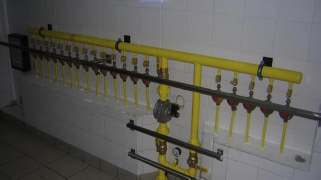

Devem-se realizar a inspeção periódicas na rede de distribuição interna. Recomenda-se que sejam realizadas em períodos máximos de 5 anos, podendo variar para menos em função de riscos decorrentes das situações construtivas, das condições ambientais (em especial aquelas sujeitas a atmosfera corrosiva) e de uso, de acordo com registros históricos. Em caso de indícios de vazamentos de gás, deve ser realizada inspeção imediata da rede de distribuição interna e tomadas providências aplicáveis.
Em caso de indícios de vazamento de gás, deve ser realizada a inspeção imediata da rede de distribuição interna e tomadas as providências aplicáveis.
A Inspeção periódica é realizada por meio de verificação na rede de distribuição interna, destinadas a manter o correto desempenho de todos os seus componentes, constando também as providências a serem tomadas para execução da manutenção preventiva naqueles componentes que possuem vida útil preestabelecida ou que possivelmente poderiam apresentar problemas de fadiga, regulagem ou funcionamento.
Profissional Habilitado - O engenheiro possui fé publica e capacidade técnica para determinar um período seguro do teste de estanqueidade para cada situação levando em conta o material utilizado e as condições da instalação.
